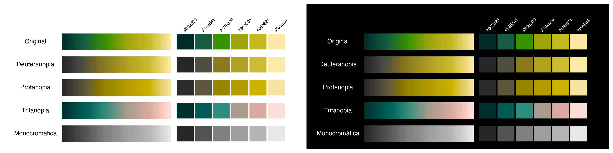
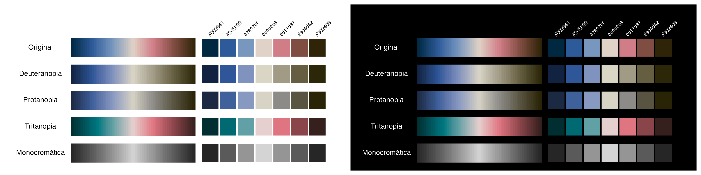
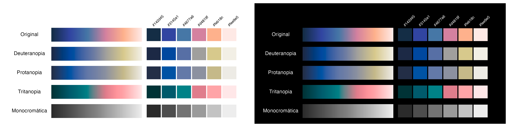
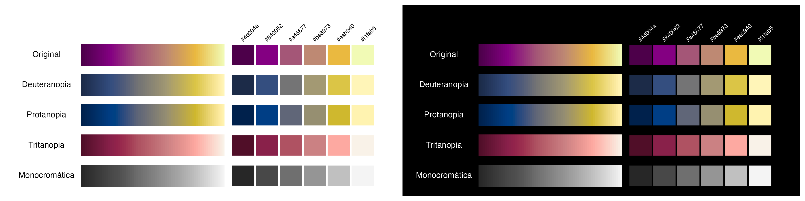
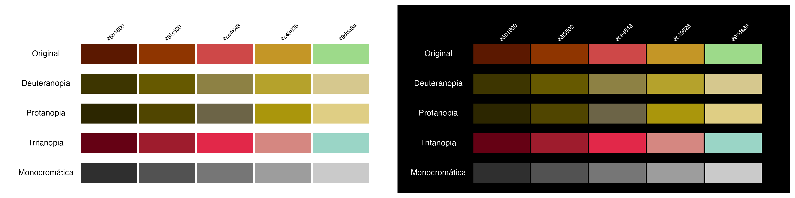
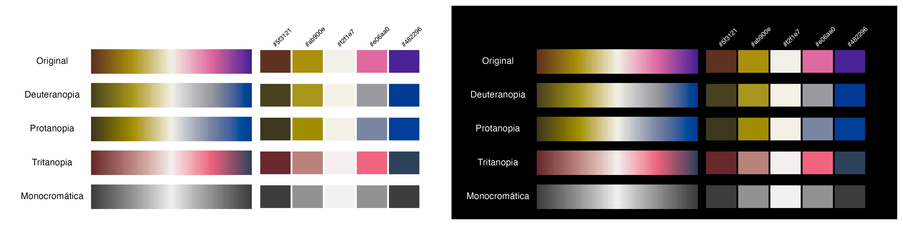
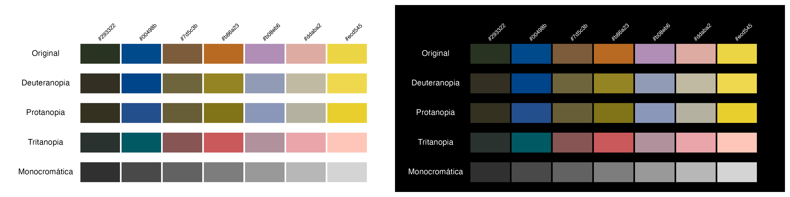
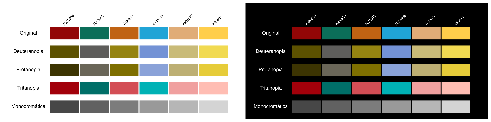
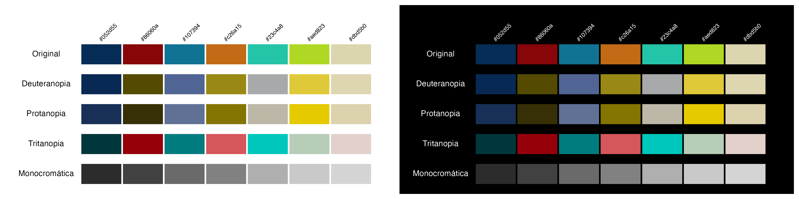
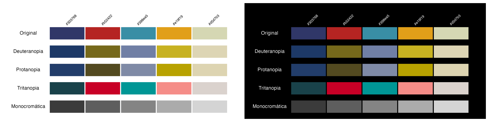

Colors, color vision simulations, and inspiration for each palette.
Alicante


Photo: Saúl Guerrero / Transvolcanic Alligator Lizard (Barisia imbricata), iNaturalist


Atlas / Atlas2



Photo: Atlas de México Grado 4° Generación 1993 / Secretaría de Educación Pública; Illustration: Rufino Tamayo

Cempasuchil


Photo: Fernando Paleta / “Conociendo a cempasúchil, la flor del Día de los Muertos”, Ladera Sur
Coqueta


Photo: Anthony Lujan, Short-crested Coquette male / Coqueta de cresta corta (Lophornis brachylophus), American Bird Conservancy

DiaDeMuertos


Photo: Chris Luengas / “Conociendo a cempasúchil, la flor del Día de los Muertos”, Ladera Sur


Ofrenda


La ofrenda / Saturnino Herrán, 1913. Museo Nacional de Arte, Public domain, via Wikimedia Commons
PacificoClara


Cerveza Pacífico Clara / Kjetil2006, Public domain, via Wikimedia Commons


Quetzal


Photo: Ondrej Prosicky, Shutterstock / Resplendent Quetzals, American Bird Conservancy


Venado8


Primeras guerras de 8 Venado en el año 1071 / Códice Nutall, lám. 43, Antropología Mexicana